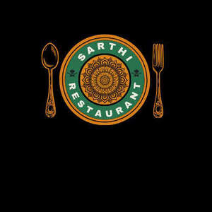

Trade Mark Journal No.2025/017 25 April 2025
UK00004187879 11 April 2025 (35,43)

- Class 35
- Restaurant management for others; Business management of restaurants; Online ordering services in the field of restaurant take-out and delivery; On-line ordering services in the field of restaurant take-out and delivery; Business management assistance in the operation of restaurants; Hotel management service [for others]; Secretarial services provided by hotels; Retail services in relation to alcoholic beverages (except beer); Mail order retail services related to alcoholic beverages (except beer); Wholesale services in relation to alcoholic beverages (except beer); Unmanned retail store services relating to drink; Retail services via catalogues related to alcoholic beverages (except beer); Retail services in relation to cups and drinking glasses; Retail services in relation to beer; Retail services in relation to preparations for making alcoholic beverages; Retail services in relation to food cooking equipment; Retail services in relation to food preparation implements; Sales promotions at point of purchase or sale, for others; Advisory services relating to business management and business operations; Business management; Help in the management of business affairs or commercial functions of an industrial or commercial enterprise; Business administration services; Business management services; Commercial business management; Management of business offices for others; Business planning and business continuity consulting; Consulting services in business organization and management; Business marketing services; Business management advice relating to manufacturing business; Business management for shops; Business organization and operation consultancy; Business brokerage services; Business planning services; Business secretarial services; Business administration; Business consulting; Business administrative services for the relocation of businesses; Business organization consulting; Business organization and management consulting; Business management for a trade company and for a service company; Business accounting advisory services; Business advisory services relating to business liquidations; Company office secretarial services; Business management and organization consultancy services; Business planning services for enterprises; Business marketing consulting services; Advisory services for business management; Business management advisory services; Management (Advisory services for business -); Business management consulting services; Business management and consulting services; Business management consulting; Business consulting services; Business management and consulting; Business management of theaters; Business strategy services; Business management and enterprise organization consultancy; Commercial assistance in business management; Business administration and management; Business organisation and management consulting services; Business project management services; Business advisory services; Business administration consultancy; Business management and administration; Consultancy regarding business organisation and business economics; Business accounts management; Assistance to commercial enterprises in the management of their business; Business management and organization consultancy; Business organization consultancy; Business assistance, management and administrative services; Administration of the business affairs of retail stores; Business planning; Business management organisation; Advisory services (Business -) relating to the management of businesses; Business management advisory services relating to commercial enterprises; Office functions services; Business management assistance for industrial or commercial companies; Business organisation and management consulting; Providing business management and operational assistance to commercial businesses; Business management advisory services relating to industrial enterprises; Business management and consultancy services; Business management consultancy services; Business consulting for enterprises; Business management of retail outlets; Business management of hospitals; Advisory services and information in business organization and management; Interim business management; Administration of the business affairs of franchises; Business management planning; Business auditing; Business management of an airline company; Advisory services (Business -) relating to the management of public sector businesses; Assistance in franchised commercial business management; Business research services; Business management consultancy; Business management and consultancy; Business management assistance; Assistance (Business management -); Assistance with business management; Advisory services (Business -) relating to the operation of franchises; Business organisation consulting; Business networking services; Business process management and consulting; Business strategy and planning services; Business consultancy; Business management of hotels; Hotels (Business management of -); Business management assistance in the establishment and operation of restaurants; Business marketing consultation services; Business management services relating to the development of businesses; Business management consultancy in the field of corporate travel; Business management and consultation services; Business organization advice; Business representative services; Business consultancy services; Business organizational consultation; Business management of airports; Business management services for footballers; Business management for freelance service providers; Business advisory services relating to the establishment and operation of franchises; Business management of conference centers; Business research for new businesses; Business advisory services relating to company performance; Business strategy development services; Assistance in management of business activities; Business supervision; Administration of business affairs; Management assistance in business affairs; Business marketing consultancy; Business process management; Outsourcing services in the field of business operations; Business risk management services; Business merger services; Business intermediary services; Business management advisory services relating to franchising; Business appraisal services; Business management and organisation consultancy services; Professional business consultation relating to the operation of businesses; Business intelligence services; Business project management; Business organisation; Business and commercial information services; Business management consultation; Professional business consulting; Business management and consultation; Business management of visitor attractions; Business promotion services; Professional business consultancy services; Business merchandising display services.
- Class 43
- Serving food and drink for guests in restaurants; Providing food and drink for guests in restaurants; Provision of food and drink in restaurants; Night club services [provision of food]; Club services for the provision of food and drink; Providing food and drink in restaurants and bars; Serving food and drink in restaurants and bars; Serving food and drink for guests; Bar and restaurant services; Restaurant and bar services; Providing food and drink for guests; Wine bar services; Serving food and drink in Internet cafes; Catering for the provision of food and drink; Providing food and drink in bistros; Take away food and drink services; Provision of food and drink; Serving food and drink in doughnut shops; Restaurant services for the provision of fast food; Providing food and drink in doughnut shops; Providing food and drink; Providing of food and drink; Salad bars [restaurant services]; Providing food and drink in Internet cafes; Beer bar services; Services for the preparation of food and drink; Food and drink preparation services; Food and drink catering for cocktail parties; Corporate hospitality (provision of food and drink); Food and drink catering; Catering of food and drink; Catering (Food and drink -); Takeaway food and drink services; Take-away food and drink services; Food reviewing services [provision of information about food and drinks]; Preparation of food and drink; Services for the provision of food and drink; Catering services for the provision of food and drink; Sushi restaurant services; Services for providing food and drink; Serving food and drinks; Restaurant services incorporating licensed bar facilities; Hospitality services [food and drink]; Providing food and drink catering services for fair and exhibition facilities; Hotel restaurant services; Food and drink catering for institutions; Preparation and provision of food and drink for immediate consumption; Coffee bar services; Food and drink catering for banquets; Arranging of wedding receptions [food and drink]; Information, advice and reservation services for the provision of food and drink; Providing of food and drink via a mobile truck; Providing food and drink catering services for exhibition facilities; Providing food and drink catering services for convention facilities; Catering of food and drinks; Ramen restaurant services; Snack bar services; Charitable services, namely providing food and drink catering; Rental of furniture, linens, table settings, and equipment for the provision of food and drink; Carvery restaurant services; Spanish restaurant services; Restaurant reservation services; Catering for the provision of food and beverages; Restaurant services; Juice bar services; Restaurant services provided by hotels; Provision of food and beverages; Take-out restaurant services; Consultancy services in the field of food and drink catering; Public house services; Private members drinking club services; Japanese restaurant services; Take-away restaurant services; Provision of information relating to the preparation of food and drink; Take away food services; Rental of kitchen worktops for preparing food for immediate consumption; Wine bars; Providing restaurant services; Providing food and beverages; Tempura restaurant services; Fast-food restaurant services; Washoku restaurant services; Preparation of food and beverages; Providing room reservation and hotel reservation services; Hookah bar services; Fast food restaurants; Private members dining club services; Beer garden services; Reservation and booking services for restaurants and meals; Guest house services; Temporary accommodation provided by halfway houses; Restaurant information services; Preparation of Spanish food for immediate consumption; Rental of food service apparatus; Food service apparatus (Rental of -); Bar services; Self-service restaurant services; Office catering services for the provision of coffee; Booking of restaurant seats; Take-away food services; Providing drink services.
MATRIX ASSET VENTURE LTD